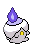

-
Bulbasaur #001

- Grama
- Veneno
Há uma semente de planta em suas costas desde o dia que este Pókemon nasce. A semente cresce lentamente.
-
Ivysaur #002

- Grama
- Veneno
Quando o bulbo em suas costas cresce, parece perder a capacidade de ficar de pé em suas patas traseiras.
-
Venusaur #003

- Grama
- Veneno
Sua planta floresce quando está absorvendo energia solar. Ele permanece em movimento para buscar a luz solar.
-
Charmander #004

- Fogo
Tem preferência por coisas quentes. Quando chove, diz-se que o vapor jorra da ponta de sua cauda.
-
Charmeleon #005

- Fogo
Tem uma natureza bárbara. Na batalha, ele chicoteia sua cauda ardente e corta com garras afiadas.
-
Charizard #006

- Fogo
- Voador
Ele cospe fogo que é quente o suficiente para derreter pedregulhos. Pode causar incêndios florestais soprando chamas.
-
Squirtle #007

- Água
Quando ele retrai seu longo pescoço em sua concha, ele esguicha água com força vigorosa.
-
Wartortle #008

- Água
É reconhecido como um símbolo de longevidade. Se sua concha tem algas, esse Wartortle é muito antigo.
-
Blastoise #009

- Água
Ele esmaga seu inimigo sob seu corpo pesado para causar desmaios. Em uma pitada, ele se retirará dentro de sua concha.
-
Caterpie #010

- Inseto
Para proteção, ele libera um fedor horrível da antena em sua cabeça para afastar os inimigos.
-
Larvitar #246

- Grounded
- Pedra
Nascido nas profundezas do subsolo, este Pokémon torna-se uma pupa depois de comer terra suficiente para fazer uma montanha.
-
Pupitar #247

- Grounded
- Pedra
Esta pupa voa descontroladamente liberando com grande força o gás pressurizado dentro de seu corpo.
-
Tyranitar #248

- Pedra
- Escuridão
Extremamente forte, pode mudar a paisagem. É tão insolente que não se importa com os outros.
-
Litwick #607
- Fogo
- Fantasma
A chama em sua cabeça mantém seu corpo levemente aquecido. Este Pokémon pega crianças perdidas pela mão para guiá-las ao mundo espiritual.
-
Lampent #608

- Fogo
- Fantasma
Aparece pouco antes de alguém morrer, então, ele temido como o emissário da morte.
-
Chandelure #609

- Fogo
- Fantasma
Este Pokémon assombra mansões em ruínas. Ele balança os braços para hipnotizar os oponentes com a dança sinistra de suas chamas.
-
Magikarp #129

- Água
Um Pokémon patético e pouco poderoso. Pode saltar alto em raras ocasiões, mas nunca mais de dois metros.
-
Gyarados #130

- Água
- Voador
Uma vez que aparece, ele entra em fúria. Ele permanece enfurecido até destruir tudo ao seu redor.